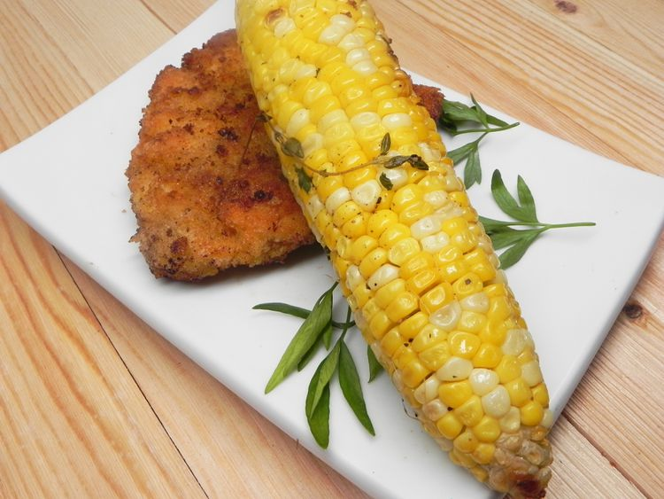

Grilled Herbed Corn on the Cob

My husband didn't like corn on the cob until he had this recipe!
Ingredients
- 6 ears fresh corn on the cob, husked
- 6 tablespoons sweet butter, softened
- 1 teaspoon fresh thyme
- 1 teaspoon fresh parsley
- 1 teaspoon fresh rosemary
- 1 teaspoon fresh basil
- 1 teaspoon white sugar
- 1 teaspoon salt
Steps
- Soak corn in water for 15 minutes. Drain and place each corn on the cob on an individual piece of aluminum foil, large enough to wrap around the corn.
- Preheat an outdoor grill for medium-high heat and lightly oil the grate.
- Mix butter, thyme, parsley, rosemary, basil, sugar, and salt together in a bowl until evenly mixed; rub onto each corn on the cob. Wrap foil around the seasoned corn.
- Grill corn on the preheated grill, turning often, until tender, about 15 minutes.
Main page